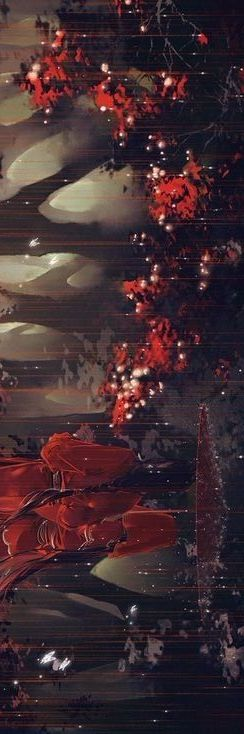
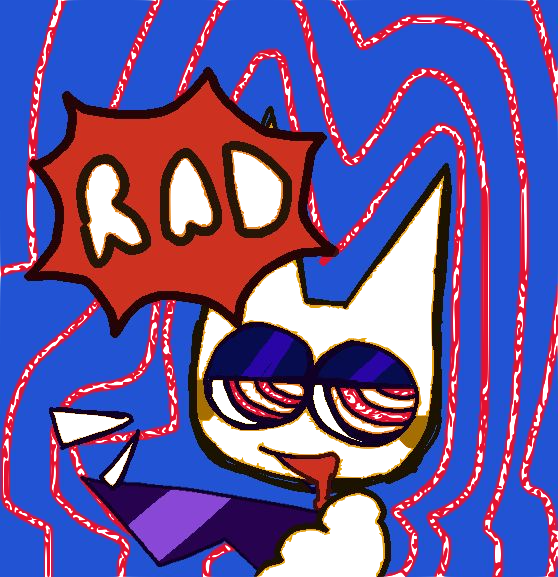
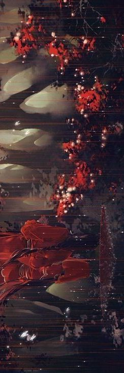
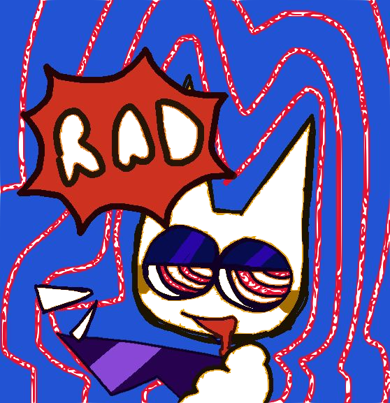
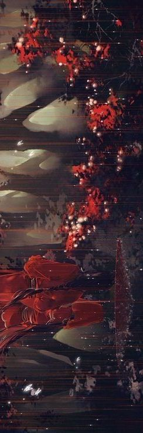
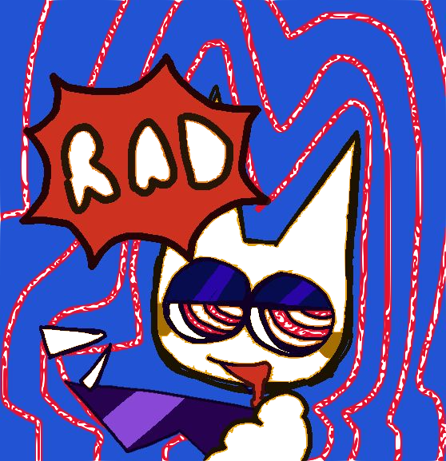
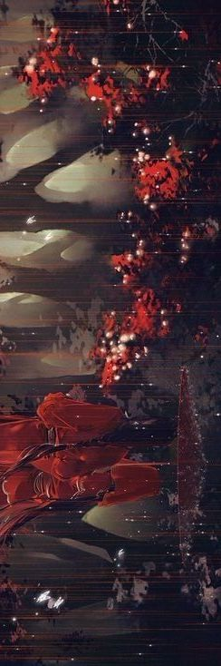
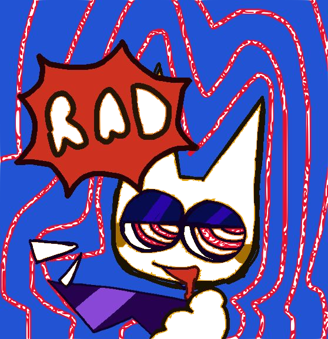

-Peace of loneliness. A playlist to listen to during your alone time. If you want to be calm or feel at peace, this is the playlist I recommend you to listen to. A calming effect from music helps you get your thoughts organised. Most of the songs do not contain any lyrics in this playlist.
-Its not the end afterall. A jazz playlist. I made this playlist to listen to as I go around cafes, or when I’m drawing. One of my friends used this playlist for doing their work. If you want, you can do it too. You may listen to this playlist for relaxation, drink tea, coffee or eat snacks while your at it.
-Place of memories. In my own experience, I listened to this playlist to think about all of the memories I’ve made. Its a playlist that lets people imagine or remember back on the nostalgic things from the past. This playlist just makes you want to lie down in a field of flowers while looking at a clear blue sky. I'd go to sleep to this.
-Sniped by eyes..This is a rock playlist. You want loud stuff to cover your surroundings? You can rely on this playlist. This playlist mostly has songs that are more on the known side of rock. If you just want to jump around your room or release energy, this playlist if for you, lol. Songs in this playlist makes you feel excited and like you want to sing your heart out. ...or maybe its just me?
-Resumption of the start. A playlist that sounds how life continues. Once something bad happens, let it go. It’s not the end after all is it? Appreciate every single thing that happens in life. May it be something small or big, if it makes you happy, appreciate it. Memories don’t end, they always stay within you, certain stuff reminds you of people. There’s more to life than it seems. Don’t waste the opportunity dwelling on things that makes you down. !! (°△°|||)